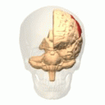
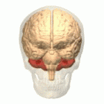
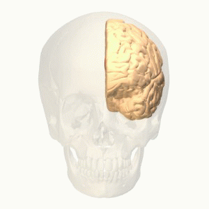

The function of the frontal lobe involves the ability to project future consequences resulting from current actions, the choice between good and bad actions (or better and best) (also known as conscience), the override and suppression of socially unacceptable responses, and the determination of similarities and differences between things or events. The frontal lobe also plays an important part in integrating longer non-task based memories stored across the brain. These are often memories associated with emotions derived from input from the brain's limbic system. The frontal lobe modifies those emotions to generally fit socially acceptable norms.
Recent advances have uncovered important roles for the frontal lobes in a multitude of cognitive processes, such as executive function, attention, memory, and language. The importance of the frontal lobes in processes underlying affect, mood, personality, self-awareness, as well as social and moral reasoning.
The temporal lobe is involved in processing sensory input into derived meanings for the appropriate retention of visual memory, language comprehension, and emotion association. The temporal lobe communicates with the hippocampus and plays a key role in the formation of explicit long-term memory modulated by the amygdala.
The temporal lobe holds the primary auditory cortex, which is important for the processing of semantics in both speech and vision in humans (an important area within the temporal lobe, referred to as the Wernicke’s area, gives us the ability to recognize speech and interpret the meaning of words. Damage to this area, such as from trauma or a stroke, can lead to difficulty understanding speech and difficulty saying words that make sense).
The temporal lobe is also believed to be part of long-term memory, such as remembering autobiographical information, dates, and places. Damage to this area can also cause anterograde amnesia, or the inability to create new memories.

The parietal lobe integrates sensory information among various modalities, including spacial sense and navigation, the main sensory receptive area for the sense of touch The major sensory inputs from the skin (touch, temperature, and pain receptors), relay through the thalamus to the parietal lobe.
The parietal lobe plays important roles in integrating sensory information from various parts of the body, knowledge of numbers and their relations, and in the manipulation of objects. Its function also includes processing information relating to the sense of touch. Portions of the parietal lobe are involved with visuospatial processing. The posterior parietal cortex (PPC) receives somatosensory and/or visual input, which then, through motor signals, controls movement of the arm, hand, as well as eye movements.
Damage to the right hemisphere of this lobe results in the loss of imagery, visualization of spatial relationships and neglect of left-side space and left side of the body. Even drawings may be neglected on the left side. Damage to the left hemisphere of this lobe will result in problems in mathematics, long reading, writing, and understanding symbols. The parietal association cortex enables individuals to read, write, and solve mathematical problems.The sensory inputs from the right side of the body go to the left side of the brain and vice versa.
The occipital lobe is the visual processing center of the mammalian brain containing most of the anatomical region of the visual cortex. Part of the area (ventral stream) is known for the processing the "what" in vision, while different part (dorsal stream) handles the "where/how." This is because the ventral stream provides important information for the identification of stimuli that are stored in memory. With this information in memory, the dorsal stream is able to focus on motor actions in response to the outside stimuli.

The cerebellum plays an important role in motor control, and it may also be involved in some cognitive functions such as attention and language as well as in regulating fear and pleasure responses, but its movement-related functions are the most solidly established. The human cerebellum does not initiate movement, but contributes to coordination, precision, and accurate timing: it receives input from sensory systems of the spinal cord and from other parts of the brain, and integrates these inputs to fine-tune motor activity. Cerebellar damage produces disorders in fine movement, equilibrium, posture, and motor learning in humans
The Orbitofrontal Cortex (OFC) is among the least-understood regions of the human brain; but it has been proposed that the OFC is involved in sensory integration, in representing the affective value of reinforcers, and in decision-making and expectation. In particular, the OFC seems to be important in signaling the expected rewards/punishments of an action given the particular details of a situation. In doing this, the brain is capable of comparing the expected reward/punishment with the actual delivery of reward/punishment, thus, making the OFC critical for adaptive learning.
Often referred to as dorsolateral prefrontal cortex (DLPFC). The DLPFC is known for its involvement in the executive functions, which is an umbrella term for the management of cognitive processes, including working memory, cognitive flexibility, planning, inhibition and abstract reasoning. However, the DLPFC is not exclusively responsible for the executive functions. All complex mental activity requires the additional cortical and subcortical circuits with which the DLPFC is connected. The DLPFC is also the highest cortical area that is involved in motor planning, organization and regulation.
Although dorsolateral prefrontal cortex dysfunction has been one of the most replicated findings in schizophrenia research, particularly during tasks that require cognitive control, the mechanisms by which impairment of this prefrontal region translates into cognitive control deficits and related behavioral abnormalities in schizophrenia remain poorly understood. Findings suggest though that there is an association between decreased dorsolateral prefrontal cortex activity and connectivity and a task-related neural network. This deficit in coordinated brain activity may result in the disabling disorganization symptoms related to impaired cognition in individuals with schizophrenia.

The anterior cingulate cortex (ACC) is believed to be involved with error detection and eliciting some form of conflict within the human brain that can potentially result in an error. Upon detection of a conflict, the ACC then provides cues to other areas in the brain to cope with the conflicting control systems.
Also, the ACC registers physical pain as shown in functional MRI studies that showed an increase in signal intensity that was correlated with pain intensity. Evidence from social neuroscience studies have suggested that, in addition to its role in physical pain, the ACC may also be involved in monitoring painful social situations as well, such as exclusion or rejection. When participants felt socially excluded in an fMRI virtual ball throwing game in which the ball was never thrown to the participant, the ACC showed activation. Further, this activation was correlated with a self-reported measure of social distress, indicating that the ACC may be involved in the detection and monitoring of social situations which may cause social/emotional pain, rather than just physical pain.
In The Astonishing Hypothesis, Francis Crick identifies the anterior cingulate, to be specific the anterior cingulate sulcus, as a likely candidate for the center of free will in humans. Crick bases this suggestion on scans of patients with specific lesions that seem to interfere with their sense of independent will, such as alien hand syndrome.
Amygdala has a primary role in the processing of memory, decision-making, and emotional reactions. The clusters of the amygdala are activated when an individual expresses feelings of fear or aggression. This occurs because the amygdala is the primary structure of the brain responsible for fight or flight response.
Amygdala volume correlates positively with both the size (the number of contacts a person has) and the complexity (the number of different groups to which a person belongs) of social networks. Individuals with larger amygdalae had larger and more complex social networks. They were also better able to make accurate social judgments about other persons' faces. The amygdala's role in the analysis of social situations stems specifically from its ability to identify and process changes in facial features.
Amygdala dysfunction during face emotion processing is well-documented in bipolar disorder. Individuals with bipolar disorder showed greater amygdala activity (especially the amygdala/medial-prefrontal-cortex circuit).
The hippocampus belongs to the limbic system and plays important roles in the consolidation of information from short-term memory to long-term memory, and in spatial memory that enables navigation.
In Alzheimer's disease (and other forms of dementia), the hippocampus is one of the first regions of the brain to suffer damage; short-term memory loss and disorientation are included among the early symptoms.
Popular theories implicate the basal ganglia primarily in action selection – in helping to decide which of several possible behaviors to execute at any given time. In more specific terms, the basal ganglia's primary function is likely to control and regulate activities of the motor and premotor cortical areas so that voluntary movements can be performed smoothly
The "behavior switching" that takes place within the basal ganglia is influenced by signals from many parts of the brain, including the prefrontal cortex, which plays a key role in executive functions.
The importance of basal ganglia for normal brain function and behavior is emphasized by the numerous and diverse neurological conditions associated with basal ganglia dysfunction, which include: disorders of behavior control such as Tourette syndrome, hemiballismus, and obsessive–compulsive disorder; dystonia; addiction; and movement disorders, the most notable of which are Parkinson's disease.
Scientists have concluded that environmental factors as well as a combination of several genes are necessary to trigger mental illness. However, it has generally been accepted that each disorder has its own genetic basis.
In 2012, one of the most comprehensive studies ever done showed that there could in fact be a common genetic factor to mental illness after all. Scientists from the Harvard Medical School and Massachusetts General Hospital analyzed sixty thousand people worldwide and found that there was a genetic link between five major mental illnesses: schizophrenia, bipolar disorder, autism, major depression, and attention deficit hyperactivity disorder (ADHD). Together they represent a significant fraction of all mentally ill patients. After an exhaustive analysis of the subjects’ DNA, scientists found that four genes increased the risk of mental illness. Two of them involved the regulation of calcium channels in neurons. (Calcium is an essential chemical involved in the processing of neural signals). The calcium channels findings suggest that perhaps—and that is a big if—treatments to affect calcium channeling functioning might have effects across a range of disorders. Already, calcium channel blockers are being used to treat people with bipolar disorder. In the future, these blockers may be used to treat other mental illnesses as well.
New Horizons
According to a new theory mentioned in
Michio Kaku's book we define human consciousness as the process of creating a model of our world in space and time (especially the future) by evaluating many feedback loops in various parameters in order to achieve a goal.
For example, a skillful CEO at a board meeting tries to draw out the disagreement among staff members and to sharpen competing points of view in order to sift through the various arguments and then make a final decision. In the same way, various regions of the brain make diverging assessments of the future, which are given to the dorsolateral prefrontal cortex, the CEO of the brain.
Mental illness is then largely caused by the disruption of the delicate checks and balances between competing feedback loops that simulate the future (usually because one region of the brain is overactive or underactive). Because the CEO of the mind (the dorsolateral prefrontal cortex) no longer has a balanced assessment of the facts, due to this disruption in feedback loops, it begins to make strange conclusions and act in bizarre ways.
For Example
The voices heard by schizophrenics might arise when several feedback loops are no longer balancing one another. One feedback loop generates spurious voices in the temporal cortex (i.e., the brain is talking to itself). Auditory and visual hallucinations are often checked by the anterior cingulate cortex, so a normal person can differentiate between real and fictitious voices. But if this region of the brain is not working properly, the brain is flooded with disembodied voices that it believes are real. This can cause schizophrenic behavior. Similarly, the manic-depressive swings of someone with bipolar disorder might be traced to an imbalance between the left and right hemispheres. The necessary interplay between optimistic and pessimistic assessments is thrown off balance, and the person oscillates wildly between these two diverging moods. Paranoia may also be viewed in this light. It results from an imbalance between the amygdala (which registers fear and exaggerates threats) and the prefrontal cortex, which evaluates these threats and puts them into perspective. We should also stress that evolution has given us these feedback loops for a reason: to protect us. They keep us clean, healthy, and socially connected. The problem occurs when the dynamic between opposing feedback loops is disrupted.
Schizophrenia is a chronic and severe mental disorder that affects how a person thinks, feels, and behaves. People with schizophrenia may seem like they have lost touch with reality. Although schizophrenia is not as common as other mental disorders, the symptoms can be very disabling.
Symptoms of schizophrenia usually start between ages 16 and 30. In rare cases, children have schizophrenia too. They include:
- Hallucinations
- Delusions
- Thought disorders (unusual or dysfunctional ways of thinking)
- Movement disorders (agitated body movements)
- “Flat affect” (reduced expression of emotions via facial expression or voice tone)
- Reduced feelings of pleasure in everyday life
- Difficulty beginning and sustaining activities
- Reduced speaking
- Poor “executive functioning” (the ability to understand information and use it to make decisions)
- Trouble focusing or paying attention
- Problems with “working memory” (the ability to use information immediately after learning it)
There are several factors that contribute to the risk of developing schizophrenia.
Genes and environment: Scientists have long known that schizophrenia sometimes runs in families. However, there are many people who have schizophrenia who don’t have a family member with the disorder and conversely, many people with one or more family members with the disorder who do not develop it themselves.
A growing body of data has implicated ion channels in the susceptibility or pathogenesis of psychiatric diseases. Indeed, population studies support the association of polymorphisms in calcium and potassium channels with the genetic risk for bipolar disorders or schizophrenia. Moreover, point mutations in calcium, sodium, and potassium channel genes have been identified in some childhood developmental disorders.
Bipolar disorder, also known as manic-depressive illness, is a brain disorder that causes unusual shifts in mood, energy, activity levels, and the ability to carry out day-to-day tasks.There are four basic types of bipolar disorder; all of them involve clear changes in mood, energy, and activity levels. These moods range from periods of extremely “up” elated, and energized behavior (known as manic episodes) to very sad, “down” or hopeless periods (known as depressive episodes).
Bipolar disorder can be present even when mood swings are less extreme. For example, some people with bipolar disorder experience hypomania, a less severe form of mania. During a hypomanic episode, an individual may feel very good, be highly productive, and function well. The person may not feel that anything is wrong, but family and friends may recognize the mood swings and/or changes in activity levels as possible bipolar disorder. Without proper treatment, people with hypomania may develop severe mania or depression.
In bipolar disorder, structural brain abnormalities in the prefrontal cortex have been confirmed in postmortem studies and with structural MRI. For example, the subgenual portion of the anterior cingulate cortex was reduced in volume in patients with bipolar disorder with a family history of affective disorder. Recent studies using voxel-based morphometry (VBM) have also reported gray-matter reductions in the prefrontal cortex in patients with bipolar disorder.
Borderline personality disorder (BPD) is a serious mental disorder marked by a pattern of ongoing instability in moods, behavior, self-image, and functioning. These experiences often result in impulsive actions and unstable relationships. A person with BPD may experience intense episodes of anger, depression, and anxiety that may last from only a few hours to days.
Some people with BPD also have high rates of co-occurring mental disorders, such as mood disorders, anxiety disorders, and eating disorders, along with substance abuse, self-harm, suicidal thinking and behaviors, and suicide. Differences in the working tissue of the brain, called grey matter, have been linked to impaired functioning of an emotion-regulating circuit in patients with borderline personality disorder (BPD). People with BPD had excess grey matter in a fear hub deep in the brain, which over-activated when they viewed scary faces. By contrast, the hub's regulator near the front of the brain was deficient in grey matter and underactive.
To find out, the researchers first used functional magnetic resonance imaging (fMRI), to compare responses of 12 adult BPD patients with those of 12 healthy controls to pictures of faces with fearful, angry and neutral expressions. In response to fearful faces, the amygdala, the fear hub, showed exaggerated activity in the BPD patients, while the anterior cingulate cortex(ACC) was relatively underactive. Since ACC activity would normally increase to dampen an overactive amygdala, this suggested weak regulation of emotion in the circuit.
Autism spectrum disorder (ASD) is the name for a group of developmental disorders. ASD includes a wide range, “a spectrum,” of symptoms, skills, and levels of disability. People with ASD often have these characteristics:
- Ongoing social problems that include difficulty communicating and interacting with others
- Repetitive behaviors as well as limited interests or activities
- Symptoms that typically are recognized in the first two years of life
- Symptoms that hurt the individual’s ability to function socially, at school or work, or other areas of life
Some people are mildly impaired by their symptoms, while others are severely disabled. Treatments and services
can improve a person’s symptoms and ability to function.
Recent findings from neuroimaging studies have led to the understanding of structural and functional abnormalities of the brain development in individuals with ASD, and the genetic bases of the brain development. Synaptic deficits mediated by genetic factors in ASD not only affect their anatomical structure, but also affect the aspects of local neuronal circuitry and the functions of brain regions. These are also related to the neuronal development and microstructural makeup of cortical folding. Differences in brain anatomy examined in ASD are relevant to specific clinical symptoms and features of ASD. ASD is likely a 'neural systems' condition that is mediated by abnormalities in regionally distributed cortical networks rather than separated brain regions. Therefore, ASD has also been referred to as a 'developmental disconnection syndrome'.
Many age-related studies have examined group differences in the total brain volume between ASD and typically developing. Findings generally have evidence of its atypical developmental trajectory with enlarged brain volume in younger individuals with ASD, but decreased volume or no difference in older individuals with ASD compared to typically developing children. Although it has not been identified abnormal brain maturation during adolescence and adulthood in ASD, brain development during early childhood in ASD seems to be predominated by an enlarged brain volume of the frontal and temporal lobes followed by arrested growth and a possible declined volumetric capacity of the brain after around 10~15 years of age.
Also known as Psychopathy or Sociopathy (in 1980 renamed to more general Antisocial Personality Disorder) is a personality disorder characterized by remorseless and impulsive antisocial behavior. It has devastating effects on society, particularly through crime. It is estimated that the prevalence of psychopathy is about 1% in the general population, but 15–25% in the U.S. adult prison population. Compared to prisoners without psychopathy, psychopathic prisoners have significantly higher rates of violent crime and recidivism.
Antisocial personality disorder is defined by a pervasive and persistent disregard for morals, social norms, and the rights and feelings of others. Individuals with this personality disorder will typically have no compunction in exploiting others in harmful ways for their own gain or pleasure, and frequently manipulate and deceive other people, achieving this through wit and a facade of superficial charm, or through intimidation and violence. They may display arrogance and think lowly and negatively of others, and lack remorse for their harmful actions and have a callous attitude to those they have harmed. Irresponsibility is a core characteristic of this disorder: they can have significant difficulties in maintaining stable employment as well as fulfilling their social and financial obligations, and people with this disorder often lead exploitative, unlawful, or parasitic lifestyles.
Although a growing number of studies are converging to implicate the prefrontal cortex (and specific subsectors thereof) as key pathophysiological substrates for the disorder, the field continues to face a number of methodological challenges and limitations that will need to be addressed in future studies. Moreover, a comprehensive understanding of prefrontal dysfunction in psychopathy will no doubt depend on further refinement of the basic systems-level understanding of normal prefrontal function.
Key regions commonly found to be impaired in antisocial populations include the prefrontal cortex (particularly orbitofrontal and dorsolateral prefrontal cortex), superior temporal gyrus, amygdala-hippocampal complex, and anterior cingulate cortex. Key functions of these regions are reviewed to provide a better understanding on how deficits in these regions may predispose to antisocial behavior.